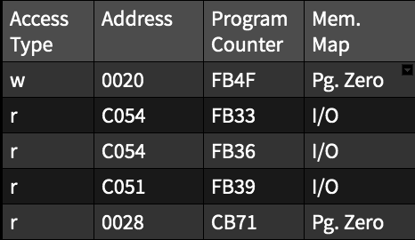

Figure 1. Screenshots from Marble Madness emulator.
The commands used to extract the trace:
- mame 0.187 run as (note -log option)
./mess64 -debug -window -log apple2e -rompath ../../mess/roms -flop1 ../../mess/images/marblemadness.dsk
- watchpoints set as
wpset 0,10000,r,1,{logerror "r a=%04x pc=%04x\n", wpaddr, pc; g}
wpset 0,10000,w,1,{logerror "w a=%04x pc=%04x\n", wpaddr, pc; g}
Data Profile

Table 1. Screenshot of a section of the dataset.
As it can be seen from the table above, the dataset is composed of three main columns and a fourth that was filled up programmatically.
- Access Type - The type of access performed. This can either be a read or a write access type. A read will only access the memory address without modifying its contents, while a write will overwrite the current contents in that address.
- Address - The memory address being accessed.
- Program Counter - The current program counter of the system which indicates where the computer is in its program sequence.
- Memory Map - The region of the system architecture that is currently being accessed. This column was added programatically according to the table found in: http://www.kreativekorp.com/miscpages/a2info/memorymap.html.
Size of Dataset
The dataset was originally over 16 million lines long but after realizing that it would be hard to read and to generate over 10 graphs with that many datapoints, I reduced the set to only include the first 200 thousand lines of the original trace.
Range of Addresses
As this trace was run on an Apple II computer, which only contains 65kB of memory, the range of the memory addresses goes from 0000 (0 Bytes) to FFFF (65535 Bytes). Both the memory address and PC columns are specified in HEX.
Goal of Analysis
The goal of this analysis is to determine code functionality based on very sparse information. The basic idea was to use graphs to visualize the changes in memory accesses and program counter values and use them to identify sections of the trace that might correspond to loops, data initialization, data copying, and other interesting functionalities.
Issues with Displayed Data
There are a couple of problems that make the visualization of these graphs a bit annoying, including the quite large dataset size and the memory addresses that could only be interpreted in decimal format, forcing the conversion from hexadecimal (which is the standard for memory addresses) to decimal (which make the addresses a bit unreadable).
- The large dataset makes it somewhat hard to differentiate between different memory accesses, as they tend to overlap one another. This was dealt with by splitting up larger graphs into smaller ones. Ideally, however, a fisheye function would have been used instead as it becomes cumbersome to generate new graphs just to examine areas of interest.
- The memory addresses and PC values had to be converted into decimal format to be used as coordinates in the resulting graphs. This had to be done since their original hexadecimal format, which are interpreted as strings, would have prevented them from being used as coordinates.
Original Questions
The original questions selected for this analysis were too vague for the assignment, as demonstrated below.
- What are hot trace regions in the dataset (frequent execution patterns)?
- Can compression be used to efficiently reduce the dataset without affecting analysis?
- Is it possible to detect regions where data is being copied from one place to the other?
- Is it possible to detect loops with an emphasis on pooling data versus other kinds of loop?
- As the used trace involves a boot up sequence, which memory regions are accessed the most while initializing the system?
- Could the trace be partitioned into specific regions of initialization (e.g. Which section involves pooling from the the keyboard? Which section initializes the graphics card, ect...)?
These questions were initially developed with the idea of using compression as an aid to detect specific code regions, where areas that were likely to belong to loops, data initializations, ect..., would be clustered together. Nonetheless, it is unlikely that compression would have been enough to give a reasonable code interpretation and would most likely have to be combined with other techniques to develop an accurate analysis. Which would be a bit unreasonable considering the time limit given for this assignment, especially since these techniques would have to be throughly tested out and implemented before performing the analysis. Which would have been out of scope for this project.
Updated Questions and Analysis